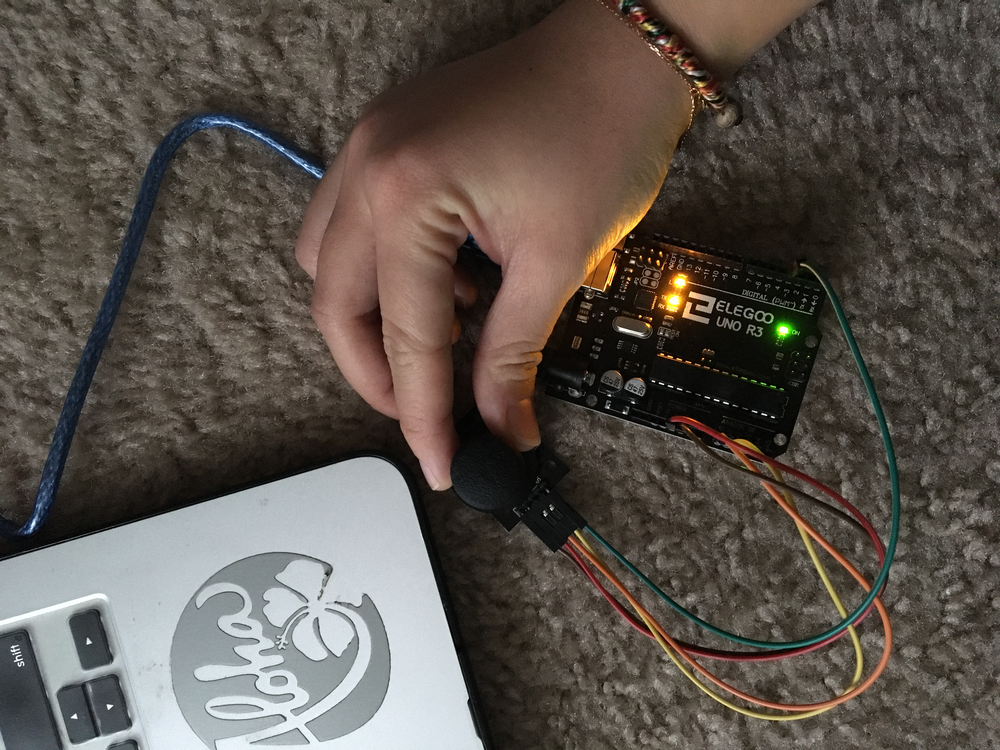

Assignment 6: Datalogging
Here is all the documentation for Assignment 6!
The Schematic

The Circuit
 This is the final set up for the circuit looping from pin2, 5V to GND.The Code Js
var serial; // variable to hold an instance of the serialport library
var portName = '/dev/cu.usbmodem14201' //rename to the name of your port
var datain; //some data coming in over serial!
var xPos = 0;
function setup() {
serial = new p5.SerialPort(); // make a new instance of the serialport library
serial.on('list', printList); // set a callback function for the serialport list event
serial.on('connected', serverConnected); // callback for connecting to the server
serial.on('open', portOpen); // callback for the port opening
serial.on('data', serialEvent); // callback for when new data arrives
serial.on('error', serialError); // callback for errors
serial.on('close', portClose); // callback for the port closing
serial.list(); // list the serial ports
serial.open(portName); // open a serial port
createCanvas(1200, 800);
background(0x08, 0x16, 0x40);
}
// get the list of ports:
function printList(portList) {
// portList is an array of serial port names
for (var i = 0; i < portList.length; i++) {
// Display the list the console:
print(i + " " + portList[i]);
}
}
function serverConnected() {
print('connected to server.');
}
function portOpen() {
print('the serial port opened.')
}
function serialError(err) {
print('Something went wrong with the serial port. ' + err);
}
function portClose() {
print('The serial port closed.');
}
function serialEvent() {
if (serial.available()) {
datain = Number(serial.readLine());
console.log(datain);
}
}
//interactive function with the button input
function draw() {
graphData(datain);
}
//initially setting of the page has black background, then alternating between grey and black.
function graphData(newData) {
background(0);
fill(255);
text("sensor value: " + newData, 300, 300);
if (datain == 0) {
text("button pressed: YES", 50,50);
background(10);
} else {
text("button pressed: NO", 50,30);
background(50);
}
}
The Code Arduino
//setting up
void setup() {
Serial.begin(9600);
}
void loop() {
int button = digitalRead(2); //button is connected to pin 2
Serial.println(button); //the serial monitor prints out the value of the button
delay(250); //pause for 250ms when reading
}
The Operation of the Circuit
Below is a short demo of the circuit in operation.